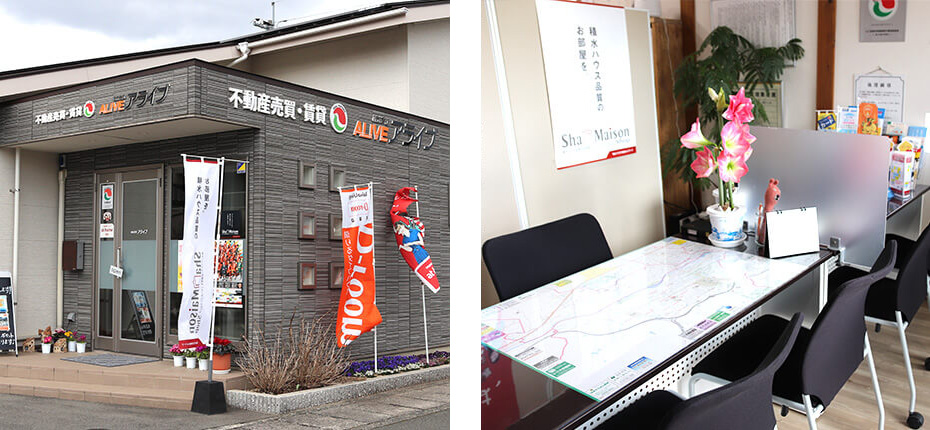
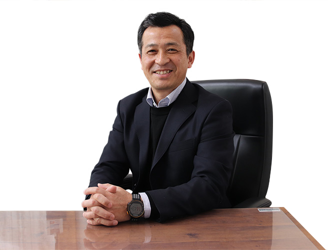

- トップ
- 会社紹介・Q&A
お客様に「生活」に関わり、本当に役立つ「生きた」情報をCompany
山口市の株式会社アライブは仲介売却や不動産買取、相続相談など幅広く対応しており、これまで多くのお客様からご依頼を承ってまいりました。こちらでは当社が数多くのお客様から選ばれている理由をご紹介します。
選ばれる理由
安心して売却できる環境づくり
当社社名の「ALIVE（アライブ）」は「生きている」という意味であり、不動産取引を通じてお客様の「生活」に関わり、お客様にとって本当に役に立つ「生きた」情報を提供する、という意味があります。
長年住んだ家を売却して住み替えるなど、多くのお客様の生活が大きく変わる時期に関わらせていただくのが不動産取引の仕事です。大切な家、大切な資産を手放す一大決心をされたお客様が少しでも安心して売却できる環境を整えたいと当社は考えます。当社は山口市エリアで長年不動産取引に携わってきた不動産のプロです。不動産に関わる専門知識だけでなく、リフォームや修繕の知識、不動産に関わる法律や税金の知識も持ち、お客様にとって本当に役立つ「生きた」情報を提供することができます。
「生きた」確かな情報を最適なタイミングで
「この地域の相場は○○くらい」「あそこの土地の所有者は○○さん」といった地域の確かな情報を持つことは、不動産取引において大変重要です。当社では不動産登記など誰もが目にできる情報だけでなく、当社スタッフが自分の目と足で探し回り見つけ出した、独自の不動産情報も保有しています。市場相場や地域の土地・物件の特性、買い主のニーズ、街の最新情報などを幅広く保有し、お客様のご提案に活かすことで、お客様にご満足いただけるスピーディーな不動産取引を実現しています。
お客様に寄り添った血の通った対応
不動産を売却することに対して戸惑いや不安という感情が生まれるお客様は少なくありません。当社はそんな気持ちに寄り添い、不安や問題を少しずつ解消していきながらご満足いただける取引を心がけています。
当社が大切にしているのは、お客様の想いにお応えすることです。他社に比べ少人数のスタッフで営業しているからこそ、お客様との一対一のやり取りを大切にし、電話やメールではなくお客様と直接顔を合わせ、想いやご希望をじっくりお伺いしています。お伺いした内容をもとにお客様を第一に考えたご提案や売却活動を行っているため、当社サービスが多くのお客様からご好評いただけているのだと考えています。
会社概要

| 会社名 | 株式会社アライブ |
|---|---|
| 所在地 | 〒753-0831 山口県山口市平井688-2 |
| 代表者 | 代表取締役 松本真一 |
| 資本金 | 300万円 |
| TEL | 083-902-8112 |
| FAX | 083-902-8113 |
| メール | info@alive-y.com |
| 免許番号等 | 宅地建物取引業者免許証 山口県知事（3）第3220号 賃貸住宅管理業者 国土交通大臣（1）第913号 |
| 設立日 | 平成18年11月22日 |
| 事業内容 |
|
代表プロフィール

| 出身地 | 山口県山口市 |
|---|---|
| 好きな本 | 堀江モンの本（自分と違った角度で見ているから。） |
| 好きな言葉 | 実るほど頭が下がる稲穂かな。 |
| 尊敬する人 | 母親（自分のことは自分で解決することを教えてくれました。） |
| 趣味 | 海外旅行（世界遺産巡り）、映画、ホノルルマラソン |
平川エリア情報
平川の今と昔について
これから生活する場所は、いったいどんなところだろう？ 地域にはそれぞれ刻んできた歴史があり、過去を含めてその場所のことを知り、もっとそこを好きになる。皆様のこれからの毎日に、「ちょっと便利な情報」と少しの“ウキウキ”をプラスする。このページがそんな風に役立てば、嬉しく思います。
「豊作を願う地元の神社祭り！！」
山口の神社祭りとして著名なのが、「高倉荒神祭」です。高倉荒神社は、豊作の神として昔から広く農家の信仰を集めています。この祭りには「おためし」と言われる年占の特殊神事があり、大きな特徴の一つです。高倉山の8合目あたりに、大きな岩に穴が空いているところが3箇所あり、これは早稲（わせ）・中稲（なかて）・晩稲（おくて）と稲を作る時期を表します。それぞれの岩に溜まった水の量でその年の豊作、不作を占うことを「おためし」と呼び、どの時期の稲を植えるかの指標にされてきました。この「おためし」の結果は、大祭当日午前0時にお宮の前に張り出されます。
当日は植木市や多くの露店も並び、恒例の副みくじも用意され、多くの人々で賑わいます。近所の小学校なども早めに授業を終えるなど、地元総出の神社祭りとして親しまれています。
「卓球との出会い石川佳純選手の母校平川小学校」
卓球の石川佳純選手。ロンドンオリンピックでは、シングルスで日本勢男女通じて初めての準決勝進出を達成しました。準決勝では0-4で敗れてメダル獲得は叶いませんでしたが、日本勢史上最高の4位入賞。続いて出場した団体では準決勝で見事2位となり、卓球界初のオリンピックメダルとなる銀メダルを獲得しました。
ロンドンオリンピックを機に、さらに知名度が上がった石川選手。帰国後には生まれ故郷・山口市で石川佳純本人による、人力車のパレードが行われました。「世界を舞台に活躍した石川選手は社会に明るい希望と活力を与えた」とたたえられ、「市民栄誉賞」の第一号が贈られました。
そんな石川選手が卓球を始めたきっかけは、彼女が平川小学校の1年の時に、近所で行われていた白石卓球クラブの練習に参加し、遊び半分でラケットを握ったところからだったそうです。両親が元卓球選手だったということもあり、自宅に卓球場を造るなど、練習環境にも恵まれてきた石川選手。ここ平川の地で練習を積みながら、めきめきと頭角を現わしていきました。
「国の天然記念物！「平川の大スギ」
山口市吉田の雑木林の中に「平川の大スギ」はあります。推定樹齢は300年以上とも言われ、国の天然記念物に指定されています。大スギには様々な言い伝えがあり、「樹皮を向いて鉢巻にすると頭痛が治り、歯痛がひどいときは樹皮を噛むと痛みがとれる」という者や、「樹皮を切り取ったものは奇病に罹る」などと言われていたといいます。もちろん今では天然記念物の樹木の皮を、勝手に剥いたり傷つけたりすることは禁止されていますが、木のそばへ行くと、歴史の趣や雄大な雰囲気を感じられると、人気の観光スポットとなっています。
Q&A
購入編
- 気に入った物件が見つかったらどうすればいいですか？
- 不動産は同じものが2つありません。「これは」と思う物件が見つかり、購入したいという意思が決まったら、まず仲介してくれた不動産会社に購入申し込みの意思表示をしましょう。不動産会社によっては、「購入申し込み」の用紙がある場合があります。必ず業者から申し込みの条件をよく聞いて申し込みをしましょう。
- 土地の購入についての手続きについて教えてください。
-
土地の購入手続きの流れは以下になります。
※表は左右にスクロールして確認することができます。
1.購入申込み 2.土地売買契約 3.土地代金精算 その土地を購入したいとなったら、申込金と印鑑をご用意いただき、土地購入申込書に署名・捺印していただきます。申込金は通常5～10万円です。 土地売買契約を結びます。
売買金額の10％未満の手付金（完成物件の場合）と印鑑をご用意いただきます。所有権移転 土地代金および諸費用を精算し、土地の引渡し、買い主への所有権移転登記を行います。
- 不動産購入時にかかる諸費用について教えてください。
- 不動産を購入するときには、物件の価格以外にも様々な諸費用がかかります。主なものは、仲介手数料、所有権移転費用、固定資産税の日割り、（建物があれば）火災保険料、また住宅ローン融資を利用する場合には保証料などの費用もかかってきます。諸費用は物件によって異なりますので、購入時に不動産会社に問い合わせましょう。
売却編
- 農地を売りたいけれど、可能ですか？
- 農地を売買する際には、農業委員会または都道府県知事の許可が必要になります。山口市の場合は、1,000m2を超えると開発許可も必要になります。中には都市計画、接道、需要によっては、売却できないこともあります。
- 売却の流れを教えてください。
-
※表は左右にスクロールして確認することができます。
1.売却のご相談 2.ご依頼・媒介契約 3.売却活動開始～売却決定 4.売買契約の締結～お引渡し お客様が保有されている、土地や土地建物の価格査定を行います。売却のご事情、売却額などのご希望をお伺いさせていただきます。 当社に売却活動をご依頼いただく場合には、当社とお客様の間で、売却に関する媒介契約を結ばせていただきます。 レインズなどへの物件情報の登録、当社ホームページ掲載、新聞折込チラシやポスティングなどの売却活動を行わせていただきます。お客様のご希望で広告媒体の制限も可能です。 【売買契約の締結】⇒【売買契約書への署名押印】⇒【買い主からの手付け金の受け取り】⇒【買い主のローン申込み（融資確認）】⇒
【お引渡しと所有権移転】⇒【買い主からの全額決済】
※農地および一定以上の広さがある場合、所有権移転前に許可が必要です。
- 売却する際に、絶対に必要な書類はありますか？
- 必要書類は、ご本人の場合以下のものが必要です。
身分証明証、住民票、印鑑証明書、登記識別情報通知書(登記済権利証)、実印
- 売却のためには、手数料とは別に広告料などがかかりますか？
- 原則としては、手数料以外に費用はかかりません。
全般編
- 仲介手数料はどのくらい払えばよいですか？
-
仲介手数料は一般に以下の計算式で求めます。ただし、売買価格が400万円を超える場合は「売買価格×3.15％+6万3000円」という速算式を用います。
1：売買価格の200万円以下の場合は5.25％
2：200万円を超え、400万円以下の場合は4.2％
3：400万円を超える場合は3.15％
※売買価格とは、総額表示価格から税を抜いた価格をいいます
- 土地の売買に消費税はかかるのでしょうか？
- 土地の売買に消費税はかかりません。表示されている土地価格が売買代金となります。
- 広さの単位はどのようにみればよいのでしょうか？
-
1坪＝2畳（帖）≒3.3平米です。以下の計算式を用います。100m2の場合、100×0.3025＝30.25坪になります。
平米数（m2）×0.3025＝坪数